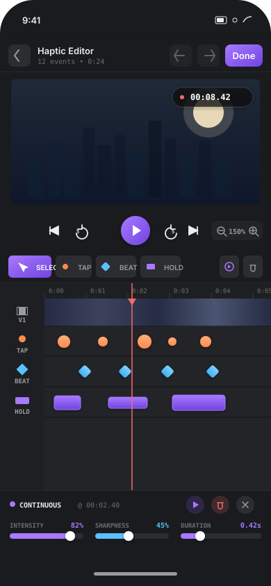
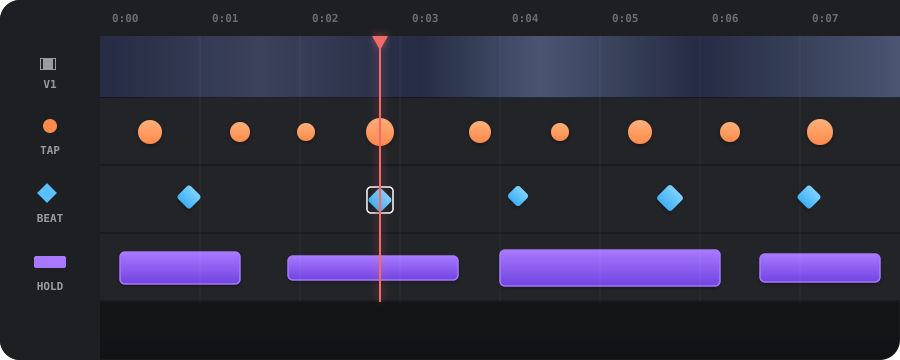

Feel · Form · Frame
An iOS app that auto-generates haptics from a video's audio and lets you fine-tune them on a Premiere-style multi-lane timeline. Tap, beat, hold — feel the cut.
By the numbers

The editor
A familiar mobile DAW chrome with a top bar, video monitor with floating timecode, transport row, tool palette, and a multi-lane timeline that locks frames to events.
The timeline
Video on top. Three haptic lanes underneath — one per event type. A sticky left column so you always know what you're editing, even when scrolled three zoom-levels deep.

Design philosophy
Why HapticVideoApp
A focused stack of features that get out of your way and let you feel the cut.
One lane per event type so markers never collide. Sticky left header column, adaptive ruler labels, pinch-to-zoom from 0.5× to 4×.
CHHapticAdvancedPatternPlayer is locked to AVPlayer state. Seeks, edits, and re-edits all re-sync the engine without dropped events.
FFT + spectral-flux analysis converts your video's audio into a first-pass haptic pattern, then you fine-tune on the timeline.
Tap (transient), Beat (impact), Hold (continuous). Each one has intensity, sharpness, and — for holds — a duration slider.
Firebase Firestore + Storage means your videos and patterns live everywhere. Share a link, feel the haptics.
Every button, slider, and event press has its own UIKit haptic. Editing haptics with haptic feedback feels right.
How it works
Grab any clip from your library or record a new one — HapticVideoApp pulls thumbnails and duration on the fly.
The audio analyzer runs FFT + spectral-flux to detect onsets and energy peaks, producing a first-pass haptic pattern.
Drop, drag, tweak intensity. Preview a single event or scrub the whole clip. Pinch to zoom in on the cut you care about.
Your finished video and its haptic pattern upload to Firebase and become a shareable link for anyone on iOS to feel.
A video without haptics is half a story. Feel the other half.
Clone the repo, open it in Xcode 16+, drop in a Firebase config, and run. The full source for the editor, the timeline, and the audio analyzer is on GitHub.
git clone https://github.com/banthia14aman/HapticVideoApp.git